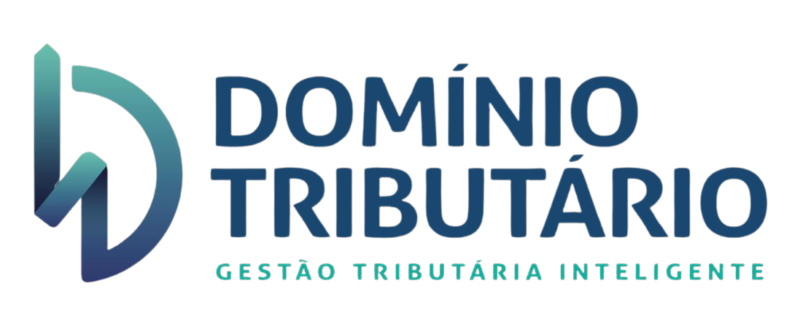
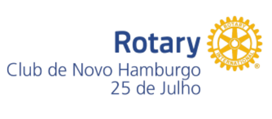
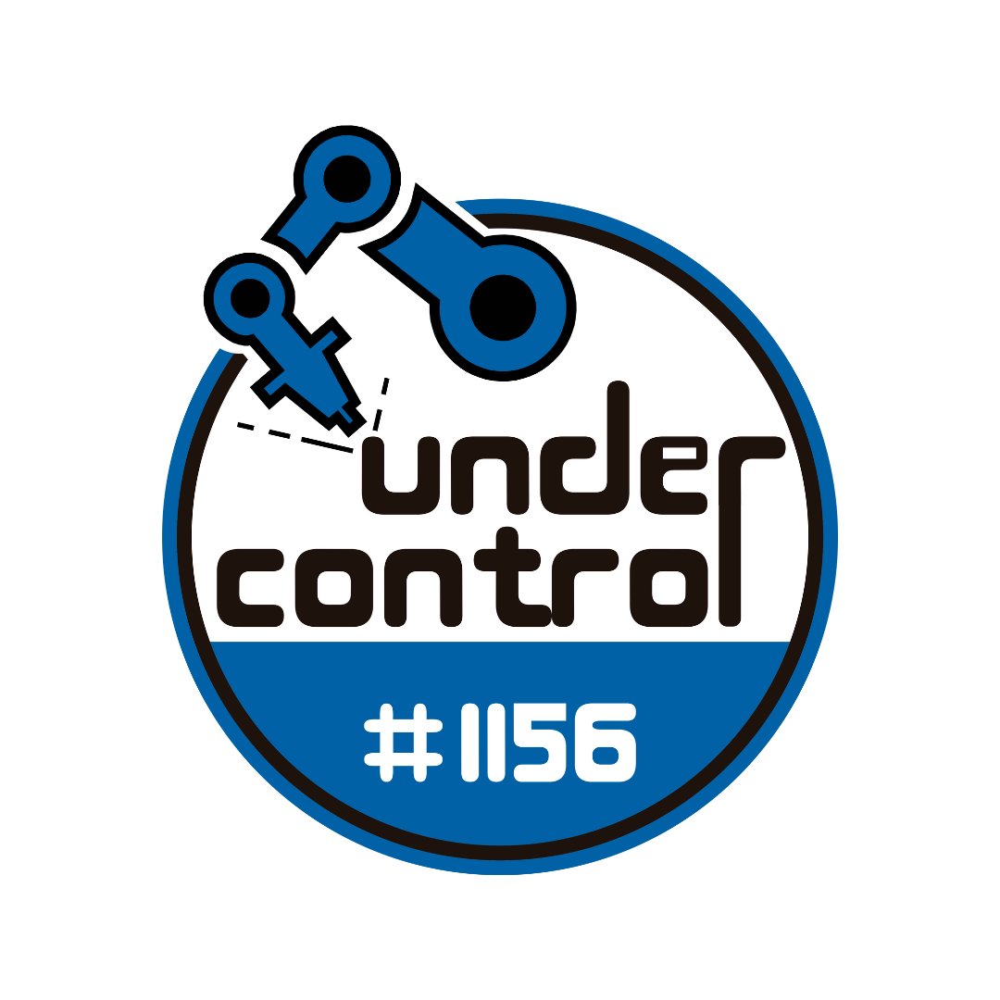

Organizadores e Parceiros
O evento é organizado pela equipe de robótica do Colégio Marista PioXII - 1156 Under Control, em parceria com o Rotary Club Novo Hamburgo 25 de Julho.
O evento conta com o apoio da Prefeitura Municipal de Novo Hamburgo, com a empresa Domínio tributário e o Colégio Marista Pio XII. Juntos, essas instituições promovem o desenvolvimento educacional e social por meio da robótica.


